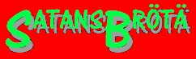

Unternehmung Turmbau
Vor Jahrhunderten wurde mit dem Bau eines Spielplatzes vor dem Schneggenbödeli begonnen. Unterdessen steht ein fast kompletter riesiger Turm dort. Es fehlen lediglich letzte Feinheiten sowie eine Rutschbahn (gell Kaka). Es ist eines unserer Ziele, im Laufe dieses Jahres diese Arbeiten zu vollenden.
W&G-Aufnahmeprüfungen
Im November werden drei von uns die J&S-W&G-Aufnahmeprüfung gewinnen. Damit dies auch sicher klappt, widmen wir uns in nächster Zeit vermehrt der guten alten Pfaditechnik. Längst Vergessenes aus alten Pfadertagen wird aufgefrischt und neue Tricks und Kniffe hinzugelernt. Und dann viel Glück!